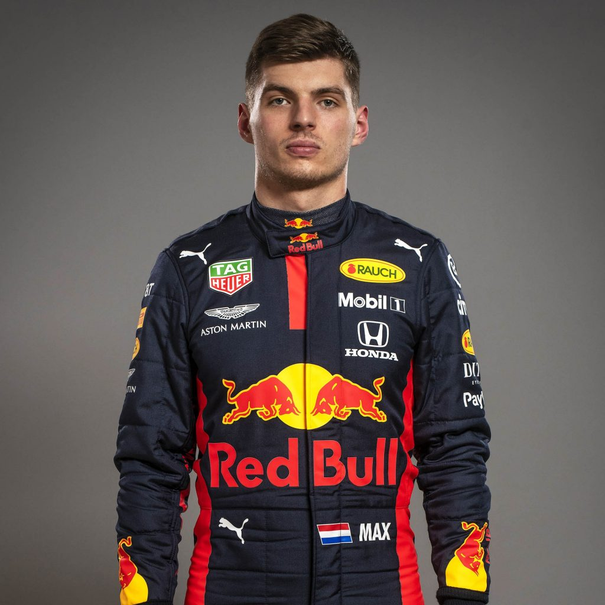

Primer on F1
Formula One (F1) is the highest class of single-seat automobile racing that is sanctioned by the Fédération Internationale de l'Automobile (FIA).
A typical season consists of 21 Grands Prix, but this season will only consist of 17
Grands Prix as a result of an irregular schedule due the COVID-19 pandemic.
Each Grand Prix consists of three races spread out over a weekend on a circuit. Friday is devoted solely
to practice laps so that drivers can familiarize themselves with the track. Qualifying sessions are held
on Saturday. These sessions determine grid positions for the actual race on Sunday, so faster lap times
earn drivers higher grid positions. The highest grid position is closest to the starting line, and it is
known as pole position
. The real race is held on Sunday, and the final places determine the number
of points earned for the driver and his team.
The World Champion is determined by the racer who has accumulated the most points for the season. The points breakdown per race is as follows:
Recommended Viewing
The 2020 season is currently back in session after a significant delay due to the COVID-19 pandemic, so
races can be streamed on ESPN+ or other services that offer live sports. An excellent documentary
series chronicling the 2018 and 2019 seasons is currently available on Netflix; it is
called Formula 1: Drive to Survive. There are also other documentary films about key
figures in F1 history, such as the film Senna about legendary driver Ayrton Senna.
Additionally, there is a fantastic Hollywood film from director Ron
Howard called Rush about the rivalry between drivers James Hunt and Niki Lauda in the 1970's. Current
World Champion Lewis Hamilton also appeared in an episode of the Netflix series My Next Guest Needs No Introduction with
David Letterman
for a long-form interview about his life.
Teams and Drivers
Below is a list of the 10 teams competing in the 2020 season. The colloquial name is included in parentheses next to the official team name. Each team has two drivers. F1 is unique among other sports in that teammates are direct competitors with each other. In fact, because teammates use the same car, teammates compete more against each other than against other racers because they can be directly compared against the performance of a teammate. Teams that have better resources (such as Mercedes and Ferrari) can often perform better without necessarily having the best drivers (although they often do) because their cars are usually engineered better.
Also included below for each team is the team chief, whose role is very similar to that of a head coach in other sports.
-
Team Name: Mercedes-AMG Petronas F1 Team (Mercedes)
Drivers: Lewis Hamilton (#44) and Valtteri Bottas (#77)
Team Chief: Toto Wolff
-
Team Name: Aston Martin Red Bull Racing (Red Bull)
Drivers: Max Verstappen (#33) and Alexander Albon (#23)
Team Chief: Christian Horner
-
Team Name: McLaren F1 Team (McLaren)
Drivers: Carlos Sainz (#55) and Lando Norris (#4)
Team Chief: Andreas Seidl
-
Team Name: BWT Racing Point F1 Team (Racing Point)
Drivers: Sergio Perez (#11) and Lance Stroll (#18)
Team Chief: Otmar Szafnauer
-
Team Name: Renault DP World F1 Team (Renault)
Drivers: Daniel Ricciardo (#3) and Esteban Ocon (#31)
Team Chief: Cyril Abiteboul
-
Team Name: Scuderia Ferrari Mission Winnow (Ferrari)
Drivers: Sebastian Vettel (#5) and Charles Leclerc (#16)
Team Chief: Mattia Binotto
-
Team Name: Scuderia AlphaTauri Honda (AlphaTauri)
Drivers: Daniil Kvyat (#26) and Pierre Gasly (#10)
Team Chief: Franz Tost
-
Team Name: Alfa Romeo Racing ORLEN (Alfa Romeo Racing)
Drivers: Kimi Räikkönen (#7) and Antonio Giovinazzi (#99)
Team Chief: Frédéric Vasseur
-
Team Name: Haas F1 Team
Drivers: Romain Grosjean (#8) and Kevin Magnussen (#20)
Team Chief: Guenther Steiner
-
Team Name: Williams Racing (Williams)
Drivers: George Russell (#63) and Nicholas Latifi (#6)
Team Chief: Simon Roberts
Top 3 Drivers
-
Lewis Hamilton (#44)
Current ranking: 1st place (190 points)
Lewis Hamilton is the dominant F1 driver of this generation. He has already won 6 world championships, putting him in the category of the all-time greats among the likes of Sir Jackie Stewart, Ayrton Senna, and Michael Schumacher. Hamilton has amassed 3,621 points since making his fiery F1 debut in 2007. He has achieved 158 podium finishes (placing 1st, 2nd, or 3rd in a race) so far.
-

Valtteri Bottas (#77)
Current ranking: 2nd place (135 points)
Valtteri Bottas is considered a "points machine" because of his impressive ability to consistently rack up points, although he often has trouble claiming full victories. This is partly due to his teammate, Lewis Hamilton, who has won an impressive 90 races in his career. There is no doubt that Bottas has rightfully earned his highly coveted seat at Mercedes, but he has remained under Hamilton's shadow during the time that they have both been on the team.
-

Max Verstappen (#33)
Current ranking: 3rd place (110 points)
Max Verstappen is an F1 prodigy born into a racing family. He is the son of a former Formula 1 driver (his father) and a former karting racer (his mother). Verstappen entered the sport of F1 as its youngest racer, at a mere 17 years old. In 2016, he became the youngest race winner (on top of his record of being the youngest points earner in F1) when he won 1st place in Barcelona at the age of 18 years and 228 days. He usually leads the middle of the pack, but he often goes toe-to-toe with frequent winners Mercedes and Ferrari.
F1 Racecar Technology
Modern Formula One cars attain such incredibly high speeds that the they could generate their own lift force, like airplanes speeding up on a runway before takeoff. Engineers design F1 cars so that the rear wings generate "downward lift" so that the car maintains grip on the track. Since F1 cars undergo rigorous physical strain on the track from rapid acceleration and deceleration, sharp turns, intense G-forces, and other mechanical stressors, engineers must think beyond traditional automobile design and seek inspiration from jet aircraft and other high-speed machines.
Circuits
Formula 1 races take place all over the world. In fact, there is at least one F1 circuit on each of 6 of the 7 continents of the world during a regular season. However, the delayed start to the F1 season this year has completely upended the standard race schedule. In a normal season, there are 21 Grands Prix. In this season, there will only be 17. Some of the usual circuits have been added or removed from last season's line-up. Below is a list of this season's circuits, in chronological order.
-
Austrian Grand Prix
Circuit Name: Red Bull Ring
Location: Spielberg, Austria
-
Styrian Grand Prix
Circuit Name: Red Bull Ring
Location: Spielberg, Austria
-
Hungarian Grand Prix
Circuit Name: Hungaroring
Location: Modyoród, Hungary
-
British Grand Prix
Circuit Name: Silverstone Circuit
Location: Silverstone, England
-
70th Anniversary Grand Prix
Circuit Name: Silverstone Circuit
Location: Silverstone, England
-
Spanish Grand Prix
Circuit Name: Circuit de Barcelona-Catalunya
Location: Montmeló, Spain
-
Belgian Grand Prix
Circuit Name: Circuit de Spa-Francorchamps
Location: Stavelot, Belgium
-
Italian Grand Prix
Circuit Name: Autodromo Nazionale di Monza
Location: Monza, Italy
-
Tuscan Grand Prix
Circuit Name: Autodromo Internazionale del Mugello
Location: Scarperia e San Piero, Italy
-
Russian Grand Prix
Circuit Name: Sochi Autodrom
Location: Sochi, Russia
-
Eifel Grand Prix
Circuit Name: Nürbergring
Location: Nürberg, Germany
-
Portuguese Grand Prix
Circuit Name: Autódromo Internacional do Algarve
Location: Portimão, Portugal
-
Emilia Romagna Grand Prix
Circuit Name: Autodromo Internazionale Enzo e Dino Ferrari
Location: Imola, Italy
-
Turkish Grand Prix
Circuit Name: Intercity Istanbul Park
Location: Tuzla, Turkey
-
Bahrain Grand Prix
Circuit Name: Bahrain International Circuit
Location: Sakhir, Bahrain
-
Sakhir Grand Prix
Circuit Name: Bahrain International Circuit
Location: Sakhir, Bahrain
-
Abu Dhabi Grand Prix
Circuit Name: Yas Marina Circuit
Location: Abu Dhabi, United Arab Emirates